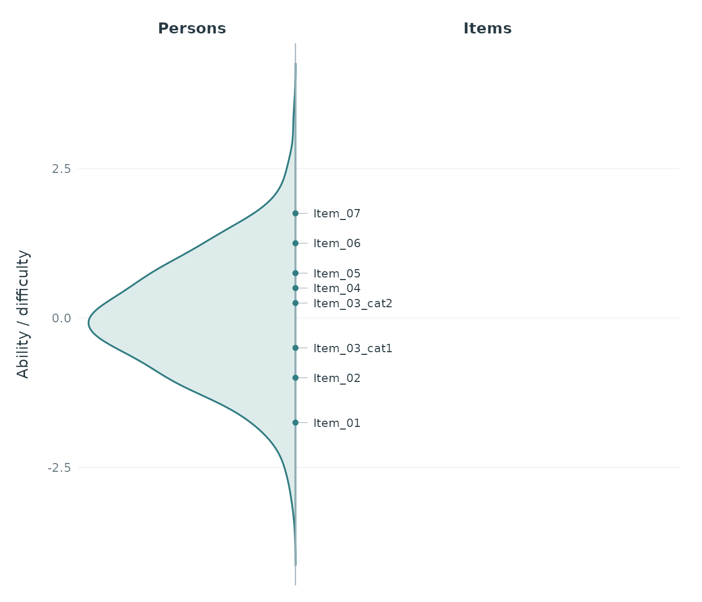
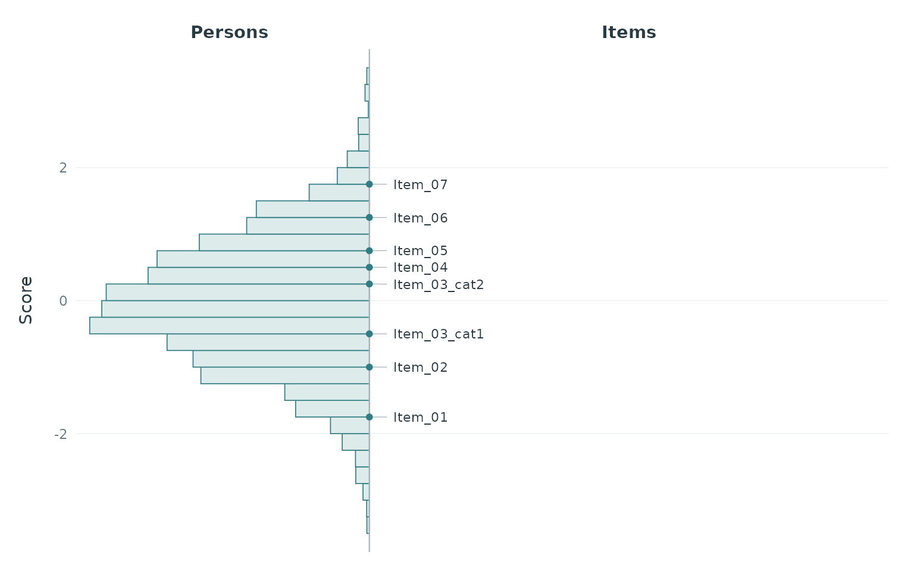
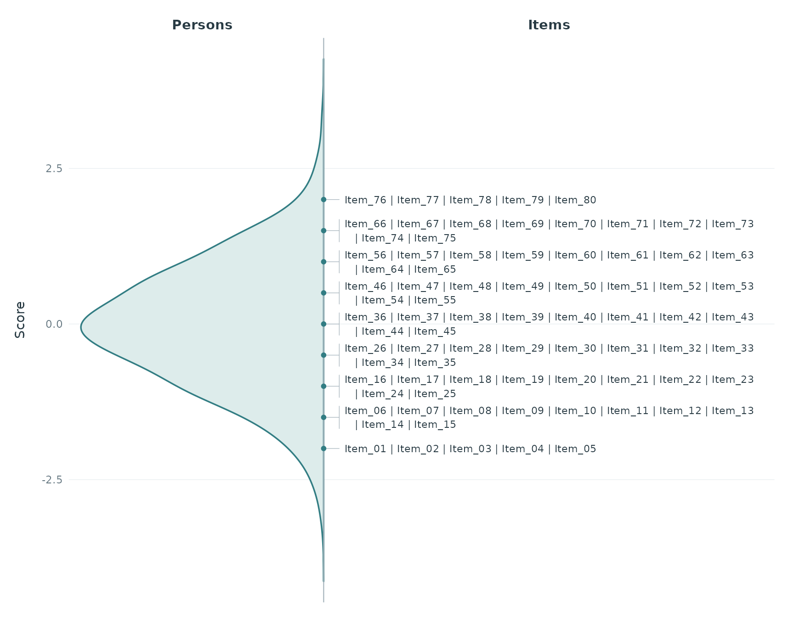
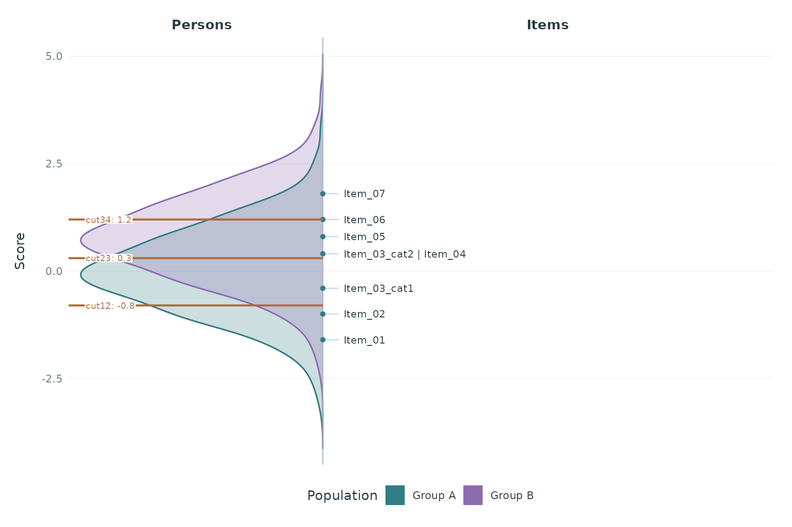
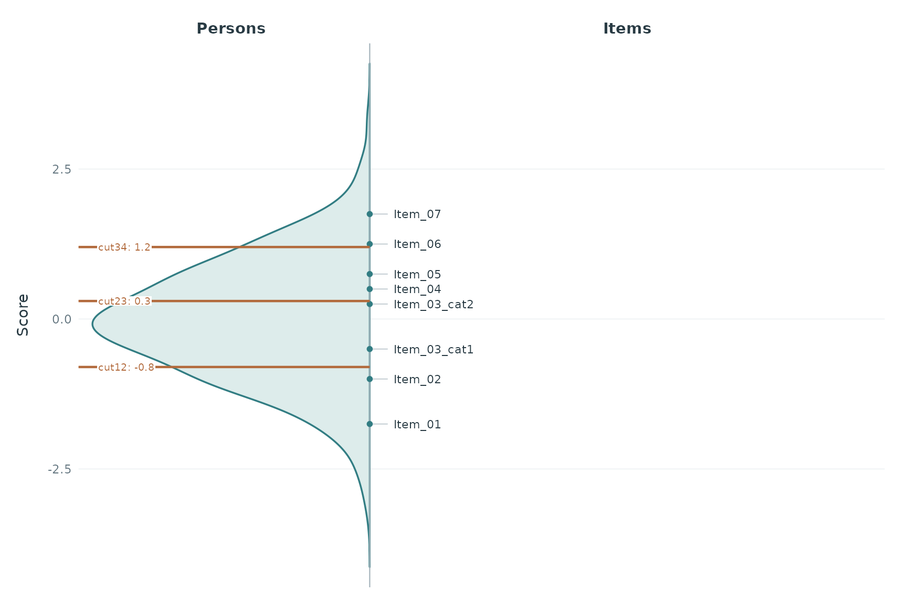

Wright Maps
wright_maps.RmdplotWrightMap() places a person distribution and item
names on a shared vertical metric. Higher scores and harder items appear
towards the top. A continuous line separates the two sides; item names
on the same display stage are separated by |. The default
uses a soft teal distribution on a white background with subtle guides.
Both portrait and landscape output are supported.
Supply item difficulties and plausible values (PVs) that already
refer to the same dimension and metric. If identifiers repeat, the
function checks the category column (or the column
specified by category_col). Identifier and category
together must be unique. Only repeated identifiers get a suffix, such as
Item_03_cat1; unique identifiers keep their names, and
their categories may be missing. Already unique names are also accepted.
No threshold calculation is performed.
set.seed(42)
persons <- data.frame(
id = 1:500,
PV1 = rnorm(500), PV2 = rnorm(500), PV3 = rnorm(500),
weight = runif(500, 0.5, 2)
)
items <- data.frame(
item = c("Item_01", "Item_02", "Item_03", "Item_03",
"Item_04", "Item_05", "Item_06", "Item_07"),
category = c(NA, NA, 1, 2, NA, NA, NA, NA),
difficulty = c(-1.7, -1.1, -0.4, 0.35, 0.45, 0.8, 1.2, 1.75)
)The default is a density curve. Each PV contributes a separate weighted density, evaluated on a common grid with a common bandwidth; these curves are averaged. The function never substitutes respondent-level PV means for the PV distribution.
p <- plotWrightMap(
items, persons, pv_cols = paste0("PV", 1:3), weight_col = "weight",
item_step = 0.25, score_label = "Ability / difficulty"
)
p
item_step controls display precision. Here each item is
assigned to the nearest multiple of 0.25, so its displayed position
differs by at most 0.125 from the supplied parameter. Exact halfway
values are assigned upwards. The default chooses a pretty step targeting
about 30 intervals across the combined observed PV and item range.
item_step = 0 retains exact positions. Item names retain
input order within each stage.
The original parameters and computed distribution remain available:
attr(p, "wright_data")$items
#> item item_id category difficulty stage
#> 1 Item_01 Item_01 <NA> -1.70 -1.75
#> 2 Item_02 Item_02 <NA> -1.10 -1.00
#> 3 Item_03_cat1 Item_03 1 -0.40 -0.50
#> 4 Item_03_cat2 Item_03 2 0.35 0.25
#> 5 Item_04 Item_04 <NA> 0.45 0.50
#> 6 Item_05 Item_05 <NA> 0.80 0.75
#> 7 Item_06 Item_06 <NA> 1.20 1.25
#> 8 Item_07 Item_07 <NA> 1.75 1.75
head(attr(p, "wright_data")$population)
#> score density
#> 1 -4.136719 1.705464e-05
#> 2 -4.120286 2.073432e-05
#> 3 -4.103854 2.505762e-05
#> 4 -4.087421 3.010614e-05
#> 5 -4.070989 3.596700e-05
#> 6 -4.054556 4.280086e-05An optional histogram uses common left-closed, right-open bins for all PVs and averages weighted relative frequencies across PVs. Both histogram and density widths are scaled to show the distribution’s shape, rather than person counts.
plotWrightMap(
items, persons, pv_cols = paste0("PV", 1:3), weight_col = "weight",
person_geom = "histogram", binwidth = 0.25, item_step = 0.25
)
Wide and long PV tables use the same arguments as
plotPopulationCuts():
long <- tidyr::pivot_longer(
persons, c("PV1", "PV2", "PV3"), names_to = "pv", values_to = "score"
)
plotWrightMap(
items, long, respondent_id_col = "id", pv_id_col = "pv",
pv_value_col = "score", weight_col = "weight"
)Missing PVs are rejected by default. pv_missing = "drop"
omits them with a warning and renormalizes weights within each PV. At
least two observations with positive weights must remain in every
PV.
Use person_prop to set the approximate share of width
for the person side, item_size for the maximum item font
size, and density_bw or density_adjust for
smoothing. Long rows wrap between item names, with a hanging indent for
continuation lines and a bracket grouping the block. Blocks can move
slightly to avoid overlap; leaders connect them to exact stage markers
on the divider. Text shrinks only when all blocks cannot fit, or a
single name is too wide. With many items, increase the output width or
height, decrease person_prop, or adjust
item_step to keep text readable. score_limits
zooms the display without changing the estimates or stages.
crowded_items <- setNames(seq(-2, 2, length.out = 80),
paste0("Item_", sprintf("%02d", 1:80)))
plotWrightMap(crowded_items, persons, pv_cols = paste0("PV", 1:3),
item_step = 0.5)
Colours are configurable through person_fill,
person_colour, item_colour, and
line_colour. For a neutral appearance, for example:
plotWrightMap(items, persons, pv_cols = paste0("PV", 1:3),
person_fill = "grey92", person_colour = "grey30",
item_colour = "grey20", line_colour = "grey65")Multiple populations can be overlaid on the person side using
population_col, with the same grouping and colour
conventions as plotPopulationCuts(). Distributions are
computed separately within populations and PVs, with a common bandwidth
and score grid (or common histogram bins). A shared horizontal scaling
factor makes shapes comparable; widths do not represent population
sample sizes. Respondent IDs may recur across populations. Items and
mean cuts remain common.
group_a <- transform(persons, population = "Group A")
group_b <- transform(persons, population = "Group B", PV1 = PV1 + 0.8,
PV2 = PV2 + 0.8, PV3 = PV3 + 0.8)
both <- rbind(group_a, group_b)
plotWrightMap(items, both, pv_cols = paste0("PV", 1:3), weight_col = "weight",
respondent_id_col = "id", population_col = "population",
population_colors = c("Group A" = "#327D83", "Group B" = "#8C6BB1"),
cuts = c(cut12 = -0.8, cut23 = 0.3, cut34 = 1.2),
cut_value_digits = 1)
Grouped fills are transparent by default, with opaque outlines and a
legend. Use population_alpha to change fill opacity.
population_colors sets both fill and outline colours. The
returned distribution table includes a population column.
The same grouping also works with person_geom = "histogram"
and with long-format PV input.
Mean cuts appear as horizontal lines through the person densities (or
histograms), ending at the divider before the item names. All
populations share the same lines at the exact cut scores. The right side
remains fully available for item names. Pass the same numeric cut vector
used by plotPopulationCuts(), a one-row
cuts_summary table, or a complete
computeCutsIDM() result. For an IDM result, only
cuts_summary is used, corresponding to
cut_selection = "mean" in
plotPopulationCutsIDM().
plotWrightMap(items, persons, pv_cols = paste0("PV", 1:3),
weight_col = "weight", item_step = 0.25,
cuts = c(cut12 = -0.8, cut23 = 0.3, cut34 = 1.2),
cut_value_digits = 1)
plotWrightMap(items, persons, pv_cols = paste0("PV", 1:3), cuts = idm_result)
# Equivalently: cuts = idm_result$cuts_summaryUse cut_labels to override names,
show_cut_values = FALSE to show names without numbers, and
cut_colour / cut_value_size for styling. Equal
cuts share a line; nearby labels avoid overlap and remain connected to
their lines. Labels sit on the person side with white backgrounds to
remain readable over the distributions. Display rounding does not affect
the exact values, which remain accessible as
attr(plot, "wright_data")$cuts. Adding cuts does not change
the estimated population distribution or item stages. Cuts must already
share the score metric; missing mean cuts must be resolved before
plotting.
The return value is a ggplot object. For example: